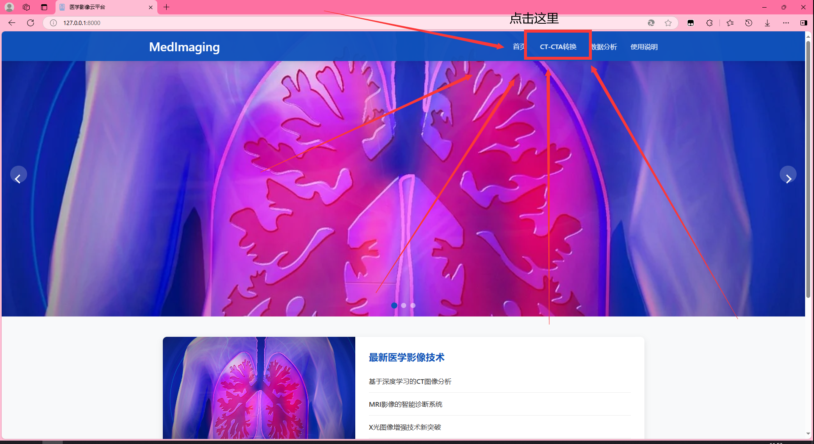
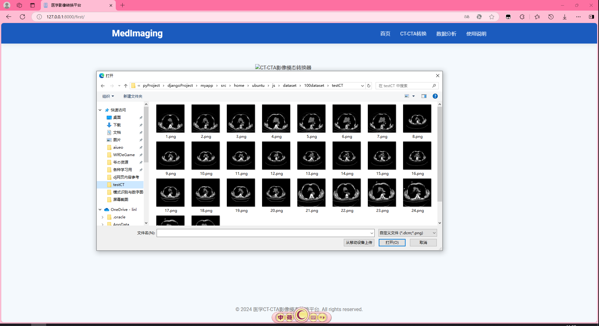
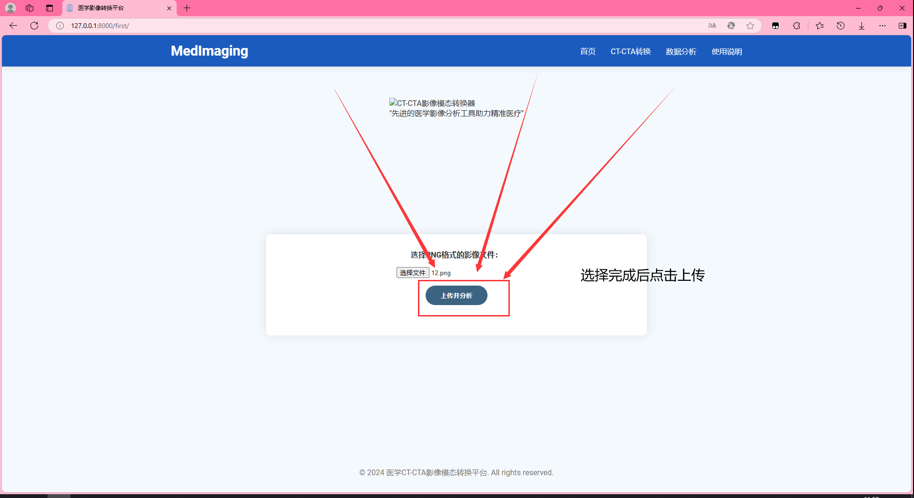
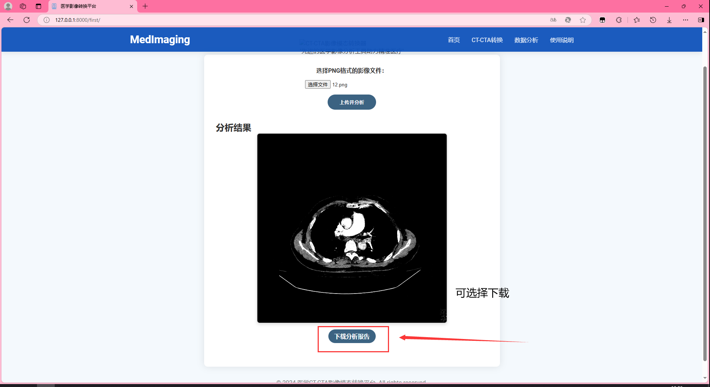

关于网站
本网站是基于深度学习的计算机辅助医疗诊断的医工结合项目，旨在使用深度学习技术处理医学影像，用于病理检测、病灶分割等方面，提供对医疗工作的辅助诊断功能。
介绍#
多模态医学影像指的是利用不同物理现象的成像技术（或模态）获取同一器官或结构的图像。不同模态的医学图像对于改善临床决策至关重要。多模态影像具有更高的成像质量和准确性，可以帮助医生分析病变的大小、形态、结构等信息，从而做出更加准确的判断。其主要特性有:
- 基于深度学习；
- 提出无监督ResAPA-CycleGAN方法，利用GAN和CycleGAN从CT生成CTA图像；
- 基于ResNet，使用ASPP和AdaLIN提升特征传递和域转换能力；
- 可以帮助无法使用血管造影剂的患者；
- 多种预设字体族（仅限桌面端）；
- 简/繁体中文支持；
- 自适应黑暗模式；
- ……
总之，这个网站就是很nb。
转换器使用方法#
项目地址：http://127.0.0.1:8000/，转换器使用方法如下：
-
进入网站之后点击CT-CTA模态转换器
这步照做就行
示例
 第一步演示 -
进入转换器页面后点击上传文件
点完会弹出选择窗口
示例

第二步演示 -
选择文件
选择图片路径，上传的图片只支持png格式
示例
 第三步演示 -
点击上传
点击上传后开始分析，可能需要等待数秒时间，请耐心等待
示例
 第四步演示 -
查看结果，可以选择下载保存
结果显示在屏幕上，查看完成后，可以选择保存，下不下载取决于自己
示例
 第五步演示
其他功能简介#
此处全面解释了本网站所有功能，看了不吃亏。下面是各种功能的效果演示。
功能1#
如何使用？
写点废话
写点注意事项示例
功能2#
如何使用？
- abab1
- abab2
示例
功能3#
如何使用？
写点废话
写点注意事项示例
设计原则#
本网站的初衷很简单，就是通过深度学习技术实现医学影像的模态转换，为患者、医生和医疗系统带来好处，包括降低成本、提高诊断效率、优化资源配置以及推动智慧医疗发展。同时，本项目也具有重要的社会价值，可以促进了医疗公平和科研进步，改善患者的治疗效果和生活质量。
设计思路
在多模态医学图像获取难、速度慢、成本高等问题背景下，我们通过独特的思路创新，利用深度学习技术实现了从单一模态医学图像向多模态图像的转换
算法创新
我们不仅将深度学习技术引入医学图像处理领域，更进一步将自然图像处理领域的先进模型如U-net、CycleGAN[2]等融合其中。通过这一跨领域的整合，我们成功实现了对多器官病灶的精准分割和图像模态的智能转换，为医学图像处理提供了更为精准和全面的解决方案。
查看详细算法对照表
| 生成器架构 | 判别器 | 损失函数 | 应用效果 | |
|---|---|---|---|---|
| 改进前（CycleGAN） | 使用普通CNN，可能存在梯度消失和特征传递效率低的问题。 | 采用普通CNN，缺乏对图像关键区域的关注能力。 | 损失函数设计较为简单，可能无法充分保留医学影像中的关键解剖结构和病理特征。 | 一般 |
| 改进后（ResAPA-CycleGAN） | 引入残差卷积网络，通过跳跃连接提升特征传递效率；使用ASPP扩展感受野并减少参数量。 | 引入注意力机制，自动聚焦图像中的重要区域，提升判别器的判断能力。 | 结合循环一致性损失、对抗损失和特征匹配损失，确保生成图像在内容和细节上与目标图像一致。 | 反正比一般的好 |
吐槽
感觉不如○神
附录#
兼容性#
本网站在间距、边框、位置属性上采用了Logical properties，在所有现代浏览器上表现良好。
查看兼容性列表
| Chrome | Safari | Firefox | IE | Edge | |
|---|---|---|---|---|---|
| 兼容性 | 69 | 12.1 | 3 | 暂未支持 | 79 |
开源协议#
「本网站」遵循MIT协议开源。